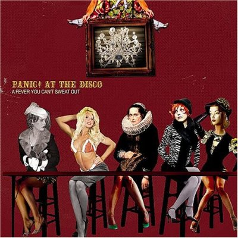

Panic! At The Disco - панк-рок группа, берущая своё начало в 2004 году в в Саммерлине (Summerlin), провинциальном районе Лас-Вегаса, двумя друзьями детства — гитаристом Райаном Россом и барабанщиком Спенсером Смитом. После подписания контракта с лейблом Decaydance. Panic! At the Disco выпустили дебютный альбом «A Fever You Can't Sweat Out» 27 сентября 2005, опираясь в раскрутке на сайты PureVolume и MySpace. Они достигли неплохого коммерческого успеха для начинающей группы. \После представления «Топ-10 артистов», имеющих контракт со звукозаписывающей компанией, составленного на сайте PureVolume, и достигнув первой строчки в чартах на MySpace.com, Panic! At the Disco появились на MTV’s Total Request Live 17 января 2006, где состоялась премьера клипа на песню «I Write Sins Not Tragedies».
